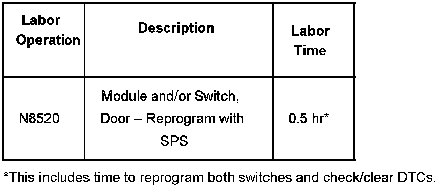

Electrical - Power Locks/Windows/Courtesy Lamps Inop.
Bulletin No.: 06-08-64-014ADate: July 20, 2006
TECHNICAL
Subject:
Door Locks, Power Windows, Door Courtesy Lamps, Heated/Cooled Seat Indicators Inoperative (Reprogram Driver & Passenger Door Switches)
Models:
2006-2007 Buick Lucerne
2006-2007 Cadillac DTS
2007 Cadillac Escalade
2007 Chevrolet Tahoe
2007 GMC Yukon
Supercede:
This bulletin is being revised to include the Lucerne and DTS models. Please discard Corporate Bulletin Number 06-08-64-014 (Section 08 - Body and Accessories).
Condition
Some customers may comment on any of the following conditions:
^ Front Door Locks Inoperative
^ Passenger Power Window Inoperative
^ Door Courtesy Lamps Inoperative
^ Heated/Cooled Seat Indicators Inoperative
^ Or any other driver or passenger door function issue that can be resolved by an ignition cycle. Customers may also comment that a vehicle ignition cycle typically cures the symptoms.
Cause
The cause of these conditions may be due to a software anomaly within the driver and passenger door switches.
Correction
DO NOT REPLACE THE DRIVER DOOR SWITCH OR PASSENGER DOOR SWITCH.
Using SPS and Pass-Thru method, reprogram the driver door switch (DDS) and passenger door switch (PDS) with updated software calibrations. These new service calibrations were released with TIS satellite data update version 2.75 / 2006. As always, make sure your Tech 2(R) is updated with the latest software version.
After the reprogramming is completed, check and clear all DTCs that may have set as a result of the programming process.
Warranty Information

For vehicles repaired under warranty, use the table.

Disclaimer